Chapter 4 · Chemistry
d-Block Configurations: Why Chromium and Copper Break the Rule
Video not playing? YouTube
The d-block's general configuration is (n−1)d¹⁻¹⁰ ns¹⁻², with 4s filling before 3d. Chromium (3d⁵4s¹) and copper (3d¹⁰4s¹) move one 4s electron into 3d, because 3d and 4s are very close in energy and half-filled and full d sets are extra stable.
Download the short notesPDF, 179 KB · solved examples, practice set and answer key Download the memory cards
PDF, 774 KB · 7 cards: the whole topic at a glance, for quick revision Download the workbook
PDF, 188 KB · fill in the blanks, true/false, assertion-reason, MCQ, numericals, short answer, match the columns; detailed solutions at the end Up next in this chapter
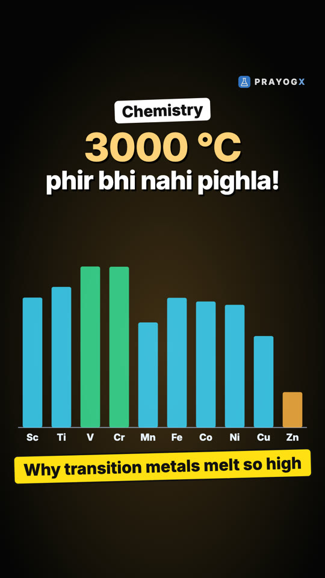
Why Transition Metals Have High Melting PointsIn transition metals the (n−1)d electrons join the ns electrons in metallic bonding, so the bonds are strong and the metals are hard with high melting points. Across the 3d series melting points peak near the middle (Mn is an exception) and fall to zinc (d¹⁰).ChemistryKey points
- General outer configuration: (n−1)d¹⁻¹⁰ ns¹⁻²; 4s fills before 3d.
- Cr: 3d⁵ 4s¹ (not 3d⁴ 4s²): a half-filled d set.
- Cu: 3d¹⁰ 4s¹ (not 3d⁹ 4s²): a completely filled d set.
- Why: 3d and 4s are very close in energy, and d⁵ and d¹⁰ are extra stable (exchange energy, symmetry).
The 3d series
| Element | Configuration | Element | Configuration |
|---|---|---|---|
| Sc | [Ar] 3d¹ 4s² | Fe | [Ar] 3d⁶ 4s² |
| Ti | [Ar] 3d² 4s² | Co | [Ar] 3d⁷ 4s² |
| V | [Ar] 3d³ 4s² | Ni | [Ar] 3d⁸ 4s² |
| Cr | [Ar] 3d⁵ 4s¹ | Cu | [Ar] 3d¹⁰ 4s¹ |
| Mn | [Ar] 3d⁵ 4s² | Zn | [Ar] 3d¹⁰ 4s² |
Why chromium and copper are different
- The 3d and 4s orbitals are very close in energy, so a small extra stability decides the arrangement.
- Half-filled (d⁵) and completely filled (d¹⁰) sets are extra stable: more exchange energy and a symmetrical distribution.
- So one 4s electron moves into 3d: Cr 3d⁵4s¹, Cu 3d¹⁰4s¹.
In the 4d series palladium goes further: 4d¹⁰ 5s⁰.
Memory cards
Swipe through the 7 cards to revise this topic in a minute.
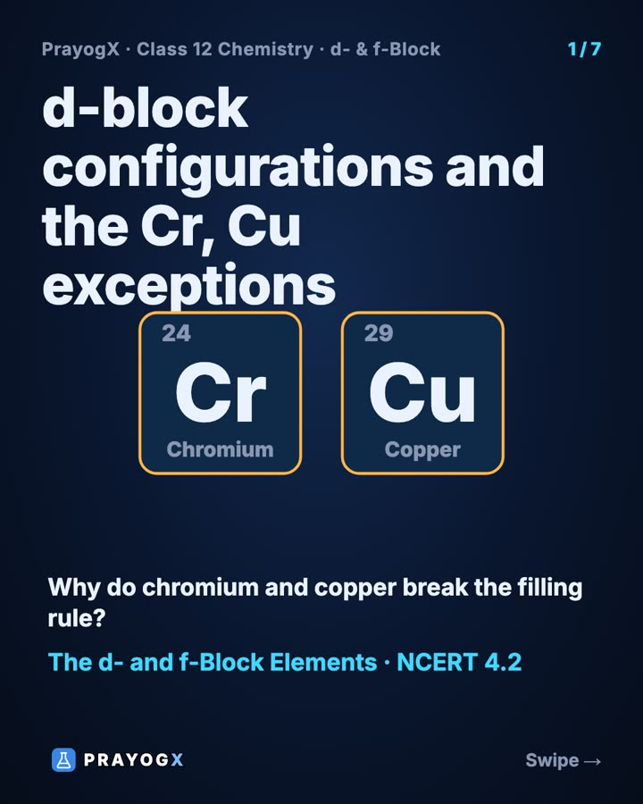
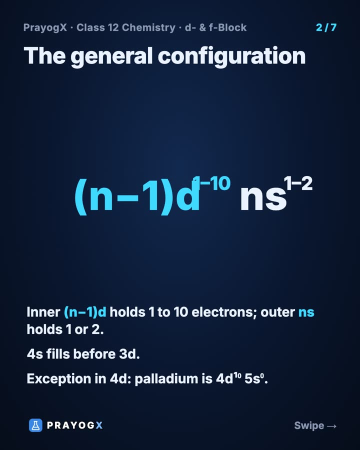
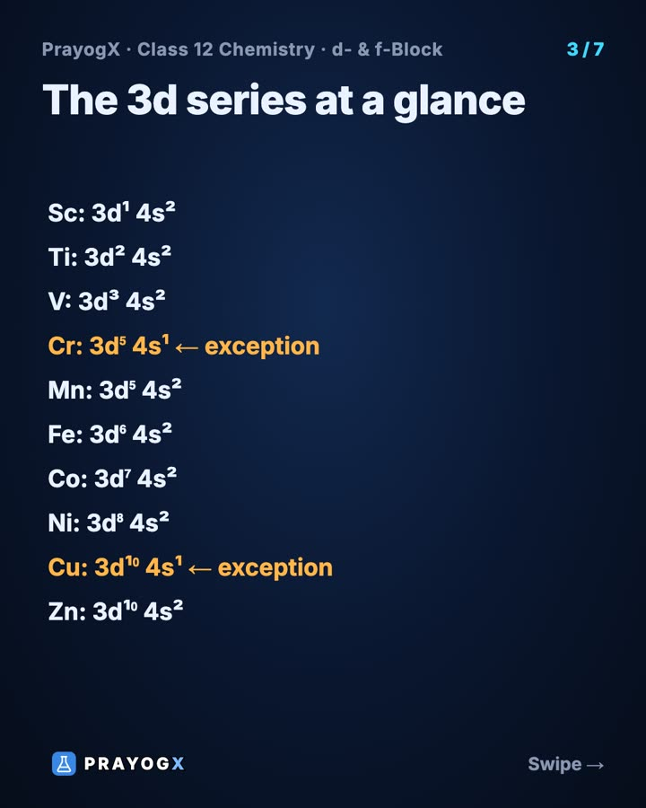
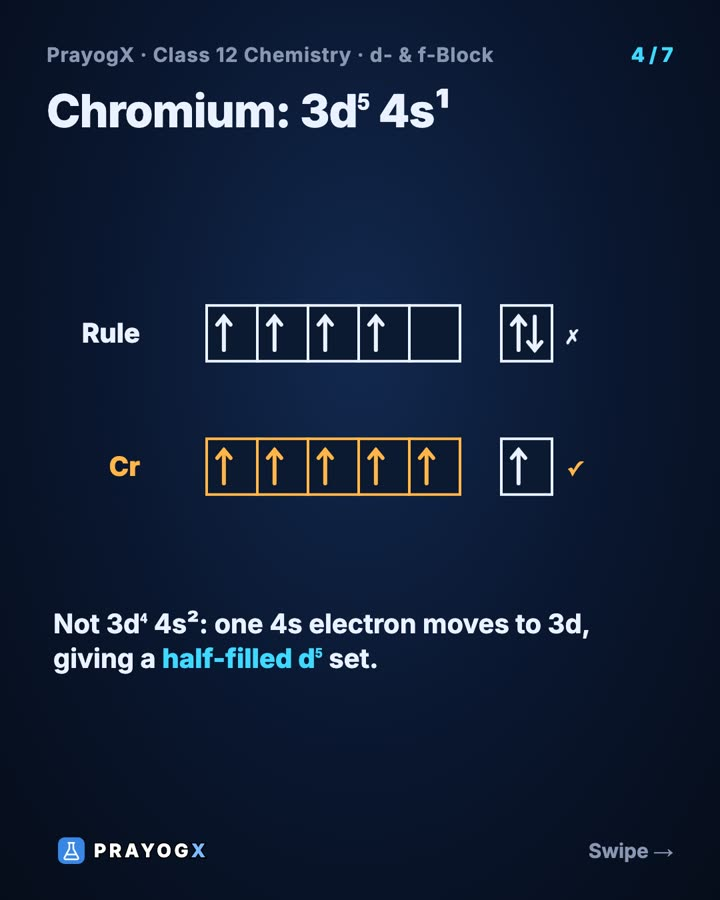
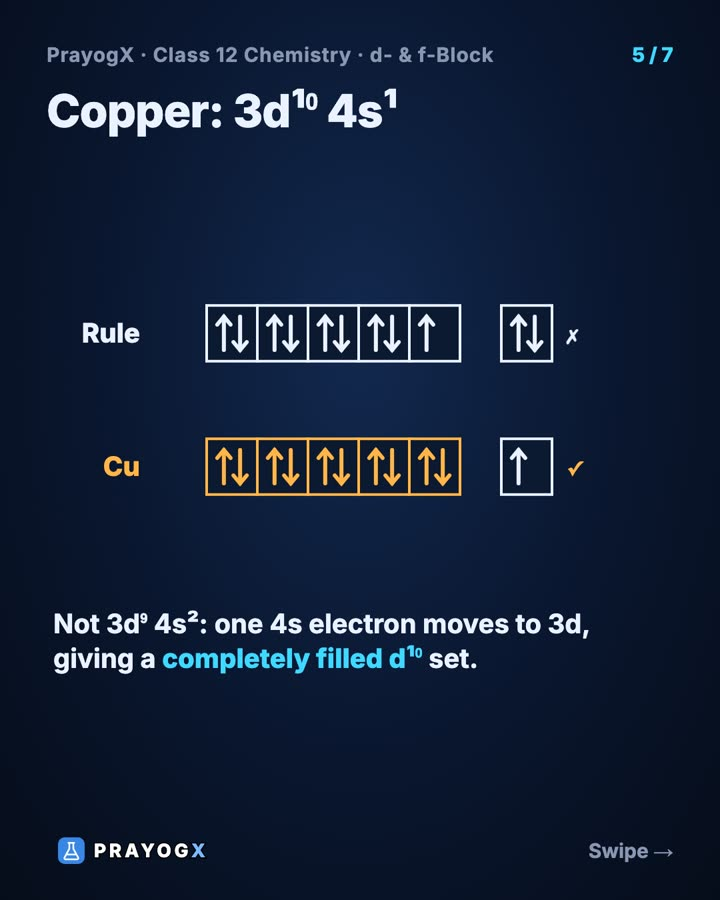
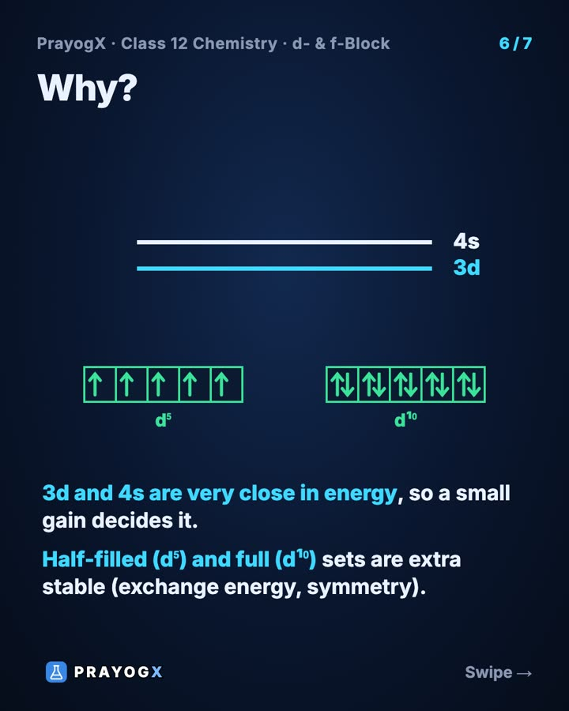
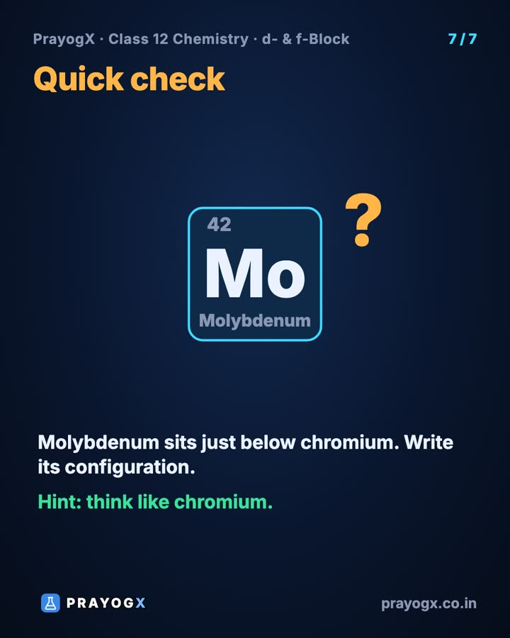
PDF, 774 KB · 7 cards: the whole topic at a glance, for quick revision
Quick quiz
5 questions. Choose an answer for each, then submit to see your score and the explanations.
More from The d- and f-Block Elements
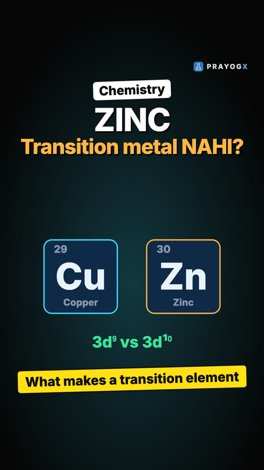
Zinc Is in the d-Block, So Why Is It Not a Transition Metal?A transition element has an incompletely filled d subshell in its atom or in a common ion. Iron (3d⁶) passes; copper (3d¹⁰ atom) passes through Cu²⁺ (3d⁹); zinc stays 3d¹⁰ even as Zn²⁺, so Zn, Cd and Hg are d-block but not transition metals.Chemistry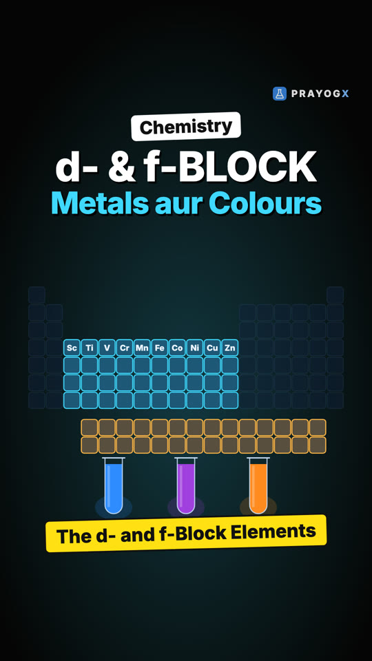
The d- and f-Block Elements: Chapter IntroductionIron bridges, copper wires and bright blue, purple and orange solutions all come from one part of the periodic table. The d-block (groups 3–12) fills d orbitals; the f-block (two rows below) fills f orbitals. Variable oxidation states, colour, magnetism and catalysis make them special.Chemistry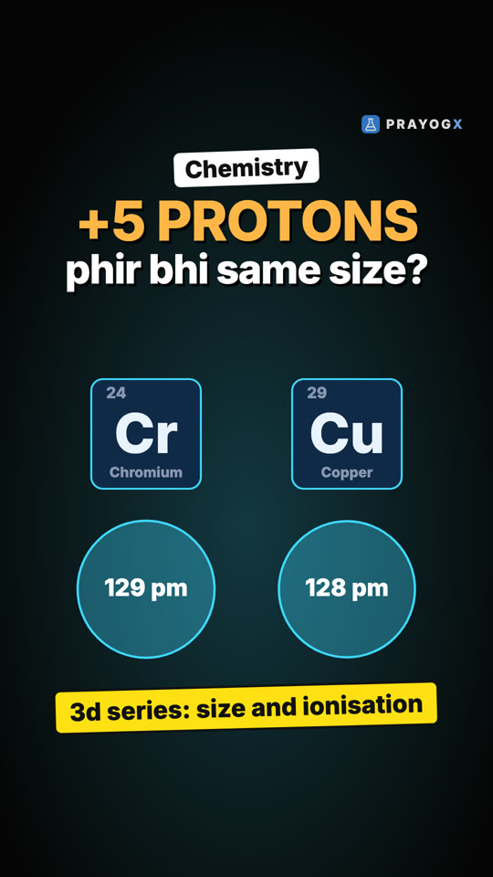
Five More Protons, Same Size: Radius and Ionisation Enthalpy across the 3d SeriesAcross the 3d series each new electron enters the inner (n−1)d subshell and shields the outer 4s electrons, nearly cancelling the extra nuclear charge. So atomic radii change only slightly and the first ionisation enthalpy rises slowly (631 → 906 kJ/mol), unlike across a normal period.Chemistry